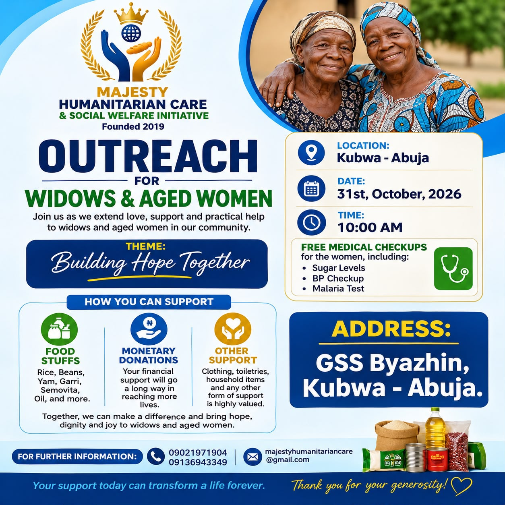

September 7, 2020
Mercy Orphanage Outreach
Food items, care supplies, and welfare assistance for vulnerable children.

Majesty Humanitarian Care & Social Welfare Initiative
A grassroots humanitarian organization protecting vulnerable children, supporting widows and orphans, and restoring hope to underserved communities across Nigeria.

Upcoming Community Outreach
Outreach for widows and aged women in Kubwa, Abuja.
We will extend care, practical support, and encouragement to widows and aged women in our community. The outreach will include free medical checkups for sugar levels, blood pressure, and malaria.
For donations and partnership support: majestyhumanitariancare@gmail.com
Who We Are
Majesty Humanitarian Care & Social Welfare Initiative serves vulnerable children, widows, orphans, and underserved communities through food relief, school materials, orphanage support, widow support, medical assistance, and community based welfare programs.
Our work started with direct grassroots service, and it is now being scaled into a stronger child protection and educational continuity campaign.
Learn about Majesty Cares
Why This Matters Now
Recent reports of school abductions, attacks on learning environments, and kidnapping fears show why child protection, school retention, and emergency preparedness programs are urgent.
Context for school safety and child protection work.
ReutersBackground on why communities need prevention and preparedness.
UNICEF NigeriaChildren need safer learning environments and stronger support systems.
Flagship Campaign
A 3 to 6 month emergency child protection and educational continuity intervention for 3,000 vulnerable children across Bwari, Kuje, Gwagwalada, Kwali, Abaji, and AMAC.
Past Work
Food items, care supplies, and welfare assistance for vulnerable children.

300 writing materials for primary pupils and food support for Binta Orphanage Home.

Relief, encouragement, and community dignity support for vulnerable widows.
Donate and Partner
Donations help provide school meals, learning materials, hygiene kits, safety education, counseling, scholarships, and direct family support.
Bank: FCMB
Account Name: Majesty Human Care & Social Welfare Initiative
Account Number: 2008775110